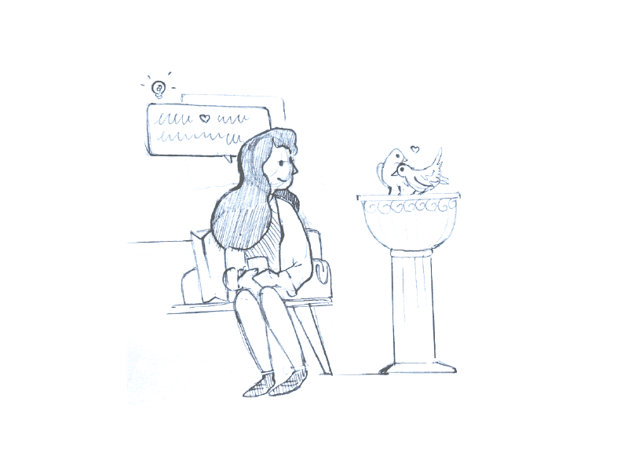
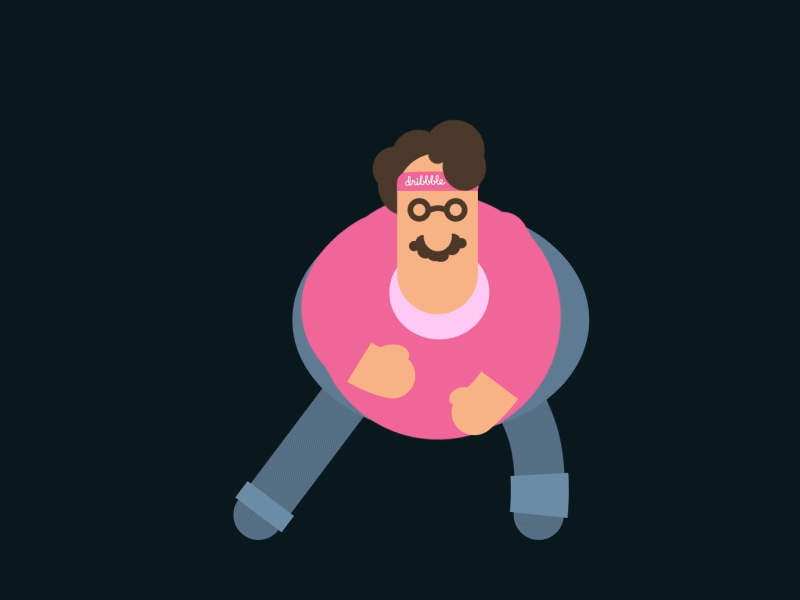

Как стать профессионалом в своей профессии
от 15 февраля 2017 · 8 мин
Стать лучшим — достойная цель для профессионалов в своём деле. По сути, это логичное завершение долгого пути саморазвития в конкретной области.
Но ведь не все специалисты достигают этого, не все становятся лучшими или даже хоть сколько-нибудь хорошими. Так от чего же это зависит? В первую очередь от самого желания стать лучшим.
Вы хотите стать лучшим в своей сфере?
Любое движение начинается с цели, и первое, что надо сделать, — это правильно поставить цель.Начинаем с постановки цели
Первый и самый главный признак хорошей цели: она мотивирует. Когда вы вспоминаете о ней, вам хочется что-то делать, она подталкивает вас к работе и отталкивает лень и прокрастинацию.
Dribbble: InVisionЕсли ваша цель не мотивирует, значит, это не та цель.
Любое движение начинается с цели, и первое, что надо сделать, — это правильно поставить цель.
Начиная своё движение, вы должны чётко знать, кем вы хотите стать и через какой промежуток времени это должно произойти. Для вас не должно быть секретом, для чего вы добиваетесь этой цели: для денег, признания, лучших условий жизни.
Кроме того, важно определить правильный темп, в котором вы будете добиваться своих целей. Если вам кажется, что стать лучшим в своей области можно лет через 40–50, возможно, стоит немного ускориться?
Когда цели поставлены, пора добиваться их. Но для этого вам придётся не раз побороть свои привычки, накопившиеся за время бесцельного существования.
Вот список качеств, которые характерны для лучшего в своей сфере — от конкретной профессии до любимого хобби.
Развиваем качества, необходимые для номера 1
Наверняка эти качества не станут для вас открытием, но часто ли вы задумывались об их развитии? Все эти качества можно назвать правильными, и даже несмотря на то, что правда чаще всего — это понятие субъективное, они совпадают практически у всех.
 Dribbble: Dany RizkyНе опаздывайте
Лучший в своём деле не опаздывает. Лучше прийти раньше на полчаса, чем опоздать на 5 минут, и оправданий здесь быть не может.
Чтобы приучить себя к пунктуальности, можно придумывать разные наказания за опоздание. Например, как советует Игорь Манн, известный маркетолог и автор книг о саморазвитии, можно наказывать себя оплатой общего счёта в ресторане.
Держите своё слово
Возьмите за правило всегда выполнять то, что обещали. Конечно, будет нелегко сразу перестроиться, если вы привыкли бросать слова на ветер, и, скорее всего, придётся придумать для себя какие-то санкции за фейлы.
Запомните одно: чтобы не приходилось много обещать и потом наказывать себя за невыполнение, просто не обещайте того, в чём не уверены. Вообще старайтесь меньше обещать.
Научитесь говорить «нет»
Если вы собираетесь стать лучшим, у вас просто не останется времени на посторонние бессмысленные просьбы.
Поэтому тренируйтесь говорить «нет» на все просьбы, которые не соотносятся с вашими планами. Хотя, конечно, стоит выбирать тщательно: некоторые отказы чреваты неприятными последствиями.
Делегируйте задачи
Если кто-то может выполнить задачу так же хорошо, как и вы, делегируйте её. Перестаньте бессмысленно нагружать себя всеми делами, так вы просто потеряете время. По максимуму передавайте задачи и занимайтесь только тем, что никто не сделает лучше вас.
Научитесь доводить дело до конца
Это серьёзное умение, о котором нам говорят с самого детства. Тем не менее мало кто доводит до конца начатое дело, начиная от больших проектов и заканчивая мелкими планами.
Если вы не можете довести до конца самое элементарное дело, как вы собираетесь менять свою жизнь и становиться лучшим?
Культивируйте в себе это умение, не оставляйте ни одно дело незаконченным, и вам будет гораздо проще измениться.
Вспомните все свои незаконченные дела и либо полностью откажитесь от них, либо закончите.
Научитесь концентрироваться
Это жизненно важный навык, который пригодится вне зависимости от дела. И чтобы стать лучшим, вам придётся этому научиться.
В первую очередь завязывайте с дурными привычками вроде проверки email, долгих бессмысленных разговоров и залипания в социальных сетях. Это паразиты, которые порождают многозадачность и отнимают время.
Для работы в неблагоприятной обстановке есть несколько простых советов, которые могут помочь. Если вам мешает болтовня в офисе, надевайте наушники с нейтральной музыкой или беруши; если не можете сосредоточиться на разговоре с клиентами по телефону, попробуйте надеть очки с затемнёнными стёклами.
Игорь Манн утверждает, что это отличный способ сосредоточиться: «Все внешние раздражители отключаются, и ты как будто видишь своего собеседника».
Также можно применять разные техники для повышения концентрации, например Pomodoro. Это техника, согласно которой вы работаете, раз в полчаса прерываясь на отдых в течение 5 минут (позже 10 и 15 минут).
Эта техника достаточно известна, и вы найдёте множество приложений-таймеров для iOS и Android, например Flat Tomato или Clockwork Tomato, варианты для десктопа, например Keep Focused для Windows, или целые сервисы для лучшей концентрации и выполнения своих целей на день вроде Persevy.
Научитесь принимать новое и постоянно развиваться

Чем старше мы становимся, тем труднее воспринимаем что-то новое. Но если вы решили стать лучшим, то стоять на месте — больше не для вас.
Пробуйте новые техники и инструменты, находите новые возможности, развивайтесь не только в своей сфере, но и в смежных с ней, знакомьтесь с новыми интересными людьми.
Вы не можете один раз завоевать звание лучшего, а потом поставить свой кубок на полку и до конца дней почивать на лаврах. Только постоянное развитие поможет оставаться лучшим.
Не сдавайтесь
В одной из своих лекций Игорь Манн упомянул одно знаменитое высказывание:
Ничто не может заменить настойчивости: ни талант — нет ничего более обычного, чем талантливые неудачники, ни гениальность — гений-неудачник уже вошёл в поговорку, ни образование — мир полон образованными изгоями.
Всемогущи лишь упорство и настойчивость. Девиз «поднажми» или «не сдавайся» решал и всегда будет решать проблемы человечества.
— Кэлвин Кулидж, 30-й президент США
Человек, имеющий все эти качества, уже претендует на звание лучшего и обязательно им станет. А теперь о том, как понять, что вы стали лучшим.
Как понять, что вы — лучший?
Как вы будете доказывать кому-то или даже себе самому, что вы лучший специалист в своей сфере? Ведь объективности как таковой не существует, и каждый человек судит себя и других со своей точки зрения.
Самое первое — это ваши проекты и свершения. Если у вас есть проекты или дела, которыми вы гордитесь, вы можете их назвать и рассказать о них, это уже успех.
Конечно, у вас могут быть и какие-то документальные подтверждения признания: много денег, дипломы, отличные рейтинги, статистика.
Что интересно, ваши провалы тоже можно считать достижениями. Почему? Потому что вы что-то делали, а не ошибается, как известно, только тот, кто ничего не делает. Поэтому цените и считайте достижениями все свои ошибки, главное, чтобы они не повторялись.
Не менее важно и позиционировать себя как лучшего в своём деле. Создание личного слогана, который настраивает вас на определённую жизненную позицию, правильное оригинальное резюме, 100 слов, которые описывают вас как личность, и прочие фишки — всё это помогает вам увидеть себя лучшим и являться им.
Итак, если у вас есть достижения, которыми вы гордитесь, есть документальные подтверждения, которых вам хватает, чтобы считать себя лучшим, и при этом вы продолжаете постоянно развиваться и позиционировать себя нужным образом, можно сказать, что вы действительно добились того, что стали номером 1, и мало кто усомнится в этом.
Правила и способы звучат достаточно просто, а вот сам путь простым не назовёшь. Ведь здесь не хватает одной мотивации: сегодня вы решили стать лучшим, день прожили «правильно», а завтра забыли обо всём.